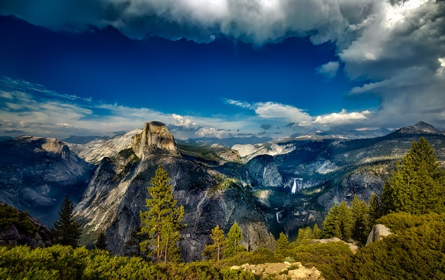

Donate Your Time
Yosemite National Park welcomes any and all people to come out and donate their time to help keep the park clean and functioning properly. We open the park to volunteers twice a month. Sign up for our newsletter to see which dates are available.

Don't have time to spare?
The National Parks Service and Yosimite National Park both have ways to donate money or assets to the cause. If you want to dontatre through a credit or debit card, click the button below.